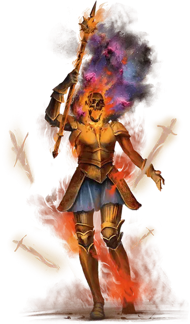

Зловещий чемпион кровопролития
Grim Champion of Bloodshed
Средняя Нежить, хаотично-злая, именной НИП

Класс Доспеха 18 (латы)
Хиты 280 (33к8 + 132)
Скорость 40 футов
| мод | спас | ||
|---|---|---|---|
| СИЛ | 23 | +6 | +6 |
| ЛОВ | 12 | +1 | +1 |
| ТЕЛ | 18 | +4 | +4 |
| мод | спас | ||
|---|---|---|---|
| ИНТ | 10 | +0 | +0 |
| МДР | 17 | +3 | +3 |
| ХАР | 21 | +5 | +5 |
Навыки Атлетика +12, Восприятие +9, Запугивание +11
Сопротивление урону некротическая энергия, холод; дробящий, колющий, рубящий от немагических атак
Иммунитет к урону яд
Иммунитет к состояниям бессознательность, глухота, испуг, истощение, ослепление, отравление, очарование, ошеломление
Чувства тёмное зрение 60 футов, пассивное Восприятие 19
Языки Общий
Опасность 20 (25000 опыта)
Бонус мастерства +6
Особенности
Легендарное сопротивление (3/день). Если чемпион проваливает спасбросок, он может вместо этого сделать спасбросок успешным.
Действия
Мультиатака. Чемпион совершает четыре атаки Пылающим моргенштерном. Он может заменить одну из этих атак Бурей клинков, если она доступна.
Пылающий моргенштерн. . Рукопашная атака оружием: +12 к попаданию, досягаемость 5 футов, одна цель. Попадание: 10 (1к8 + 6) колющего урона плюс 14 (4к6) урона огнём.
Буря клинков (перезарядка 5-6). Чемпион вызывает бурлящий поток спектральных лезвий, заполняющий 20-футовый куб с центром в точке, которую он может видеть на расстоянии 120 футов. Буря длится до начала следующего хода чемпиона. Пока буря активна, её область действия представляет собой труднопроходимую местность. Всякий раз, когда существо впервые в свой ход попадает в область бури или начинает в неё свой ход, оно должно совершить спасбросок Ловкости Сл 19, получая 27 (6к8) рубящего урона при провале или половину этого урона при успехе.
Легендарные действия
Чемпион может совершать 3 легендарных действия, выбирая из указанных ниже вариантов. Лишь одно легендарное действие может быть совершено за раз, и только в конце хода другого существа. Чемпион восстанавливает истраченные действия в начале своего хода.
Яростная погоня. Чемпион перемещается на свою скорость или приказывает своему скакуну переместиться на свою скорость. Это перемещение не провоцирует атак.
Побуждение к насилию. Чемпион нацеливается на одно существо, которое он может видеть в пределах 60 футов. Цель должна преуспеть в спасброске Мудрости Сл 19, иначе должно немедленно совершить одну рукопашную атаку оружием по другому существу по выбору чемпиона, которое находится в пределах досягаемости цели. Если ни одно существо не находится в пределах досягаемости цели или если цель недееспособна, цель вместо этого получает 11 (2к10) урона психической энергией.
Запугивание (стоит 2 действия). Чемпион выбирает любое количество существ, которых он может видеть в пределах 30 футов. Каждая цель должна преуспеть в спасброске Мудрости Сл 19, иначе станет испуганной до конца своего следующего хода.
Описание
Вайнемар Брэк когда-то была фермером, но наёмники в ходе локальной войны сравняли с землей её поля и разграбили деревню. В отчаянии она поддалась хитроумной болтавне странствующей гадалки и вытащила карту из колоды многих вещей [deck of many things]. Образ смерти [avatar of Death] убил её в мгновение ока. Это было много веков назад, и теперь Вайнемар - могущественный и кровожадный командир нежити Зловещих разорителей.
Окутанная пылающим огнём, Вайнемар олицетворяет хаос насилия и войны. Она скачёт на пылающем коне, который использует блок характеристик кошмара [nightmare], который является Нежитью, а не Исчадием.
Зловещие разорители
Мрачную Борону возглавляют три могущественных существа с титулом Зловещего чемпиона. Каждый чемпион воплощает в себе ужасную грань смерти. Джин Корвис, Зловещий чемпион Опустошения, является старейшим и самым могущественным из трёх и воплощает всепоглощающее ничто. Давным-давно она привела Мрачную Борону в Сады Наслаждения и является номинальным лидером всей нежити на демиплане. Два других чемпиона — Вайнемар Брэк, Зловещий чемпион Кровопролития, и Алерон, Зловещий чемпион Мора — соперничают с Джин за власть и вместе могут противостоять ей. Тот факт, что три чемпиона редко приходят к согласию в чем-либо, является серьезной проверкой силы группы. Вместо того, чтобы "Зловещие разорители" действовала как единая сила, каждый из трех чемпионов обычно преследует свои собственные интересы, редко сотрудничая или делясь разведданными или ресурсами.